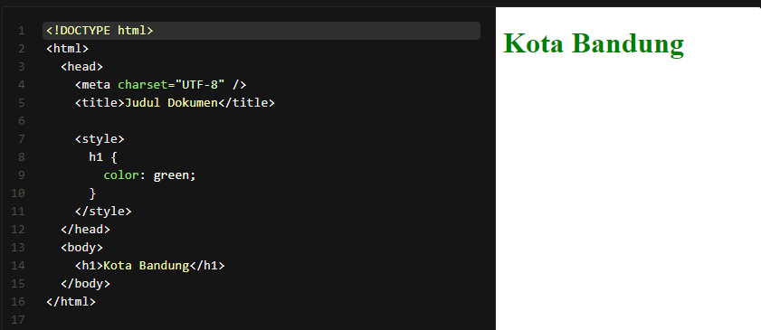

CSS atau Cascanding Style Sheet adalah standar dari W3C untuk mengatur visualisasi berkas yang ditulis pada HTML
Pada modul ini, kita akan belajar penggunaan dasar lainnya. Tepatnya, mulai dari membuat berkas CSS, aturan struktur sintaksnya, teknik penerapan, konsepnya, hingga menerapkan dasar styling, seperti memberikan warna pada sebuah teks.
Sintaks CSS berbeda dengan HTML, begitu pula dengan JavaScript. CSS bukanlah sebuah bahasa pemrograman karena tidak ada logika, tidak ada sintaks pengondisian, tidak ada proses iterasi, dsb. padanya. CSS hanya sebuah declarative language yang digunakan untuk mendeklarasikan suatu nilai yang nantinya digunakan untuk mengatur tampilan sebuah elemen HTML pada browser.
Dengan menerapkan CSS, tampilan website kita akan lebih menarik. Berikut adalah beberapa keuntungan yang didapatkan ketika kita menerapkan CSS
Dengan menggunakan CSS kita bisa membuat sebuah website terlihat seperti dokumen cetak dengan desai yang menarik dan presisi.
Kita dapat menetapkan styling pada beberapa berkas HTML hanya dengan menggunakan satu berkas CSS
Seluruh browser saat ini minimal sudah mengukung CSS versi 2. Untuk browser populer, seperti Chorme dan Firefox, sudah mendukung CSS versi 3.
Sebuah style sheet bekerja melalui tahapan berikut.
Sebuah style sheet dibuat dari satu atau lebih aturan styling (biasa disebut dengan rules atau rule-sets) yang mendeskripsikan cara sebuah elemen atau sebuah kelompok elemen ditampilkan dalam jendela browser.
Langkah awal belajar CSS adalah dengan memahami sebuah bagian rule. Berikut adalah dua contoh rules yang dituliskan dalam sebuah CSS. Rule pertama menetapkan sebuah warna hijau pada emenen h1 dan kedua menetapkan ukutan font dan tipe font pada sebuah elemen paragraf
Dalam penggunaan CSS, terdapat dua bagian pada sebuah rule. Bagian pertama adalah identitas elemen atau elemen yang akan menerapkan rule (singkatnya kita akan sebut selector) dan kedua adalah deklarasi atau instruksi yang akan diterapkan pada sebuah selector.
Pada contoh di atas, h1 dan p digunakan sebagai selector. Ia dipanggil melalui tipe elemennya dan ini merupakan teknik dasar dari pemanggilan selector. Properti dan nilainya yang terdapat dalam delcadation/declaration block akan diterapkan pada seluruh elemen h1 dan p yang ada pada dokumen HTML. Pada materi selanjutnya, kita akan mengetahui berbagai cara lainnya untuk menetapkan selector dengan lebih canggih lagi
Bagian deklarasi terdiri dari pasangan properti dengan nilainya. Kita bisa menetapkan lebih dari satu deklarasi pada satu rule; contohnya seperti pada selector p, kita menetapkan lebih dari satu deklarasi pada declaration block. Setiap deklarasinya harus diakhiri dengan semicolon (;) sebagai tanda diakhirnya sebuah deklarasi
Karena CSS tidak memperhatikan spasi (sama seperti bahasa pemrograman pada umumnya), sebaiknya penulisan deklarasi selalu diawali dengan garis baru agar mudah dibaca dan dipahami
Namun, tetaplah ingat, walaupun CSS tidak memperhatikan spasi, untuk satuan nilai semisal px, em, dan lainnya harus dituliskan tanpa spasi pada nilainya. Contohnya berikut.
Komentar digunakan untuk menjelaskan kode dan dapat menbantu ketika anda mengedit kode sumber dilain waktu. Hal yang tertulis akan diabaikan oleh browser dan tidak akan ditampilkan dibrowser. Hal ini menjadi opsi baik untuk memberi catatan atau informasi dokumentasi pada kode.
Sebagaimana contoh yang telah beberapa kali Anda lihat di atas, CSS comments ditempatkan dalam elemen style dengan cara penulisan diawali “/*” dan diakhiri “*/” seperti kode berikut.
External Style Sheet adalah berkas terpisah yang didalamnya hanya ada CSS rules. Berkas harus berekstensi .css dan akan dihubungkan dengan dokumen HTML. Cara ini merupakan yang paling powerful dalam menerapkan styling. Dengan cara ini, satu berkas styling (.css) dapat digunakan oleh banyak berkas HTML.
Untuk menautkan berkas .css dengan dokumen HTML, kita dapat gunakan elemen link pada head berkas HTML. Contohnya berikut.
Pada elemen link tersebut, kita tetapkan berkas CSS yang digunakan dengan menggunakan atribut href dan beri nilai “stylesheet” pada atribut rel sebagai relationship (hubungan) antara berkas style.css dengan dokumen HTML. Pada contoh di atas, kita tahu bahwa berkas css yang digunakan adalah berkas lokal (berkas yang berada pada komputer/server kita sendiri). Nilai atribut href juga dapat berupa berkas .css yang tersedia melalui sebuah URL.
Contohnya, banyak pengembang menggunakan bootstrap.min.css untuk membantu penyusunan layout website-nya. Kita bisa menggunakannya pada berkas HTML dengan langsung menuliskan URL untuk berkas tersebut.
Catatan : Nama berkas yang mengandung “min.css” adalah penamaan format berkas CSS yang sudah di-minify atau diminimalkan dengan menghilangkan white space yang tidak digunakan.
Embedded Style Sheet adalah kumpulan rules yang dituliskan dalam berkas HTML dengan menggunakan elemen style. Dengan demikian, CSS rules yang dituliskan hanya dapat dicakup oleh satu berkas HTML. Penulisan rules harus dituliskan dalam elemen style dan biasanya ditempatkan dalam head pada berkas HTML
Inline Style adalah styling yang diterapkan secara langsung pada HTML dengan menggunakan atribut style. Kita bisa memberi styling ke target elemennya. Bisa dikatakan juga bahwa kita memberikan style declaration dalam satu baris bersamaan dengan deklarasi elemen HTML. Kita juga tidak memerlukan selector lagi dalam metode ini.
Untuk memperbanyak styling properties (multiple propesties), kita tuliskan saja mereka dalam atribut yang sama, tetapi kita perlu memanfaatkan semicolon (;) sebagai pemisah antar styling propertiesnya
Inline styles hanya diterapkan pada elemen tempat atribut style diterapkan. Teknik ini seharusnya dihindari, terkecuali benar-benar diperlukan untuk menggantikan sebuah styling yang ditetapkan pada Embedded Style Sheet atau External Style Sheet.